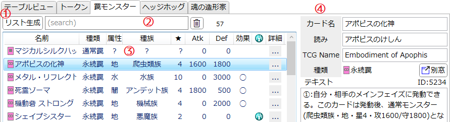

「罠モンスター」タブ
魔法/罠カードをモンスター扱いで特殊召喚するカードを調べるためのタブです。
説明

-
リスト生成
- このタブは初期状態では何も表示されていません。
- 「リスト生成」ボタンを押すと、データベースに存在するカード全てのテキストを調べ、罠モンスター(※)の一覧を生成します。
- 正規表現によってカードテキストから機械的に情報を読み取るため、誤って解釈された情報が存在する可能性があります。
- ※「罠モンスター」ではない《マジカルシルクハット》と《ダーク・サンクチュアリ》がリストに含まれますが、意図的な仕様です。
-
サーチバー
-
テキストボックスに入力してEnterを押すとテキスト検索を適用します。
詳しくは検索ウィンドウ/文字列検索を参照してください。 -
 : 絞り込みを解除します。
: 絞り込みを解除します。
- サーチバーの右端には、現在そのリストに表示されている項目の数が表示されます。
-
テキストボックスに入力してEnterを押すとテキスト検索を適用します。
-
カードリスト
-
以下の効果を持つカードが一覧されます。
- 発動後、自身をモンスター扱いで特殊召喚する罠カード(罠モンスター)
- 自身以外の魔法/罠カードをモンスター扱いで特殊召喚する効果を持つカード
- 項目を選択すると右側にカード情報が表示されます。
- Shiftキーを押しながら項目をクリックすると、山括弧《》で囲ったカード名がクリップボードにコピーされます。
- 効果モンスター扱いとなるカードは「効果」欄に◯が表示されます。
-
チューナー扱いとなるカードにはチューナーアイコン
 が表示されます。
が表示されます。
-
ヘッダー(「名前」などが書かれている部分)をクリックすると、それを基準として項目をソート(並べ替え)します。
- ソートを解除(ID順にソート)したい場合は「詳細」のヘッダーをクリックしてください。
-
以下の効果を持つカードが一覧されます。
-
カード情報欄
- 選択されているカードの詳細が表示されます。
- 内容は基本的には「データベース/カードリスト」のカード情報に準じます。